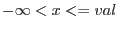

| interval specification | alternative expression | meaning |
| : or (:] or [:) or (:) | true | |
| val or [val] | val == x | |
| val: or [val:] or [val:) | val <= x |
|
| (val:] or (val:) | val < x | |
| :val or [:val] or (:val] | val >= x |  |
| [:val) or (:val) | val > x | |
| lo:hi or [lo:hi] | lo <= x && hi >= x | |
| (lo:hi] | lo < x && hi >= x | |
| [lo:hi) | lo <= x && hi > x | |
| (lo:hi) | lo < x && hi > x |